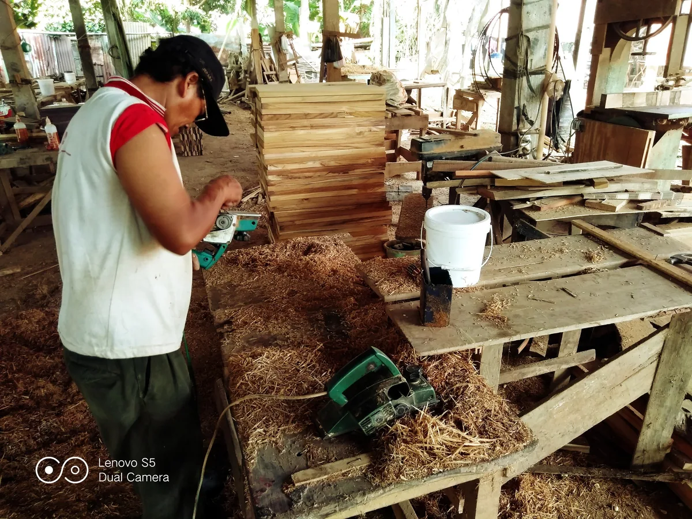
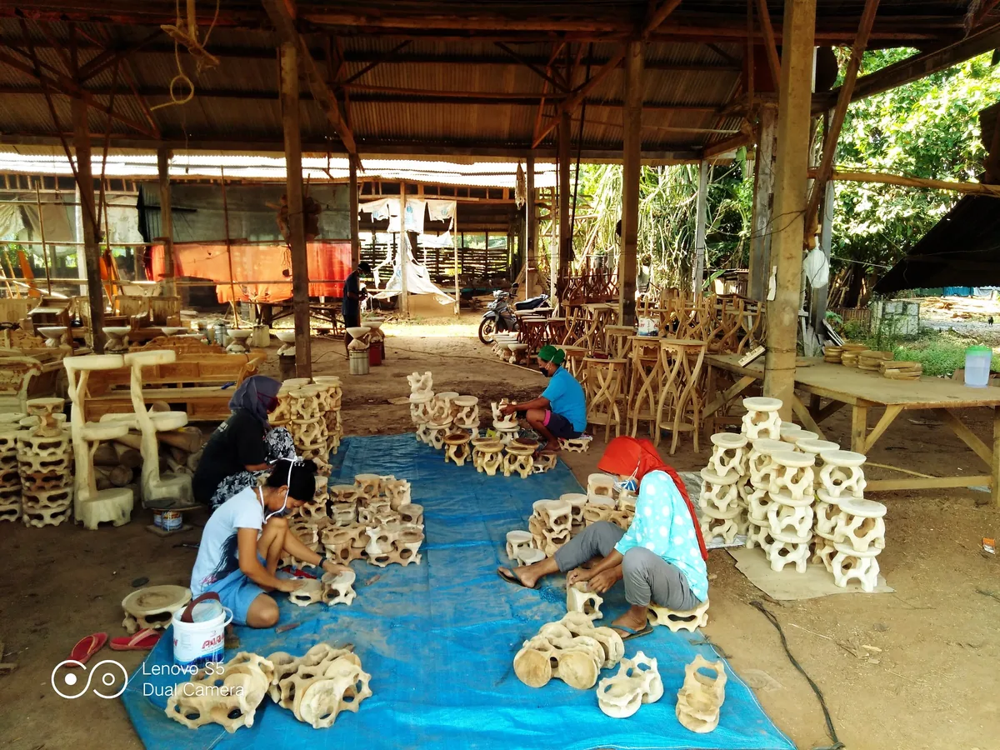
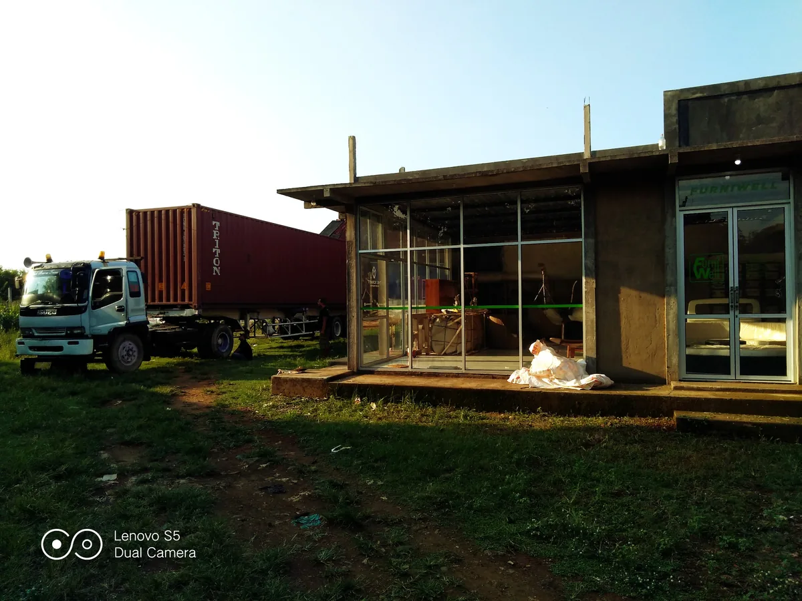

Material preparation
Timber and components are selected and prepared according to the agreed product requirement.
This page uses original workshop and shipment assets from the Furniwell website backup. Moisture-content and certification claims remain withheld until verified.
Timber and components are selected and prepared according to the agreed product requirement.
Parts are shaped, drilled, carved, or machined for the required construction.
Components are assembled and checked for fit, stability, and dimensions.
Surface preparation and finishing follow the buyer-approved colour and sheen.
Dimensions, visual finish, hardware, and packing requirements are reviewed before shipment.
Finished goods are protected, consolidated, and loaded according to the shipment plan.

Original production photography from the archived website.

Real production evidence is more useful to buyers than generic stock photography.

Archived loading images support export-readiness claims without inventing capacity figures.

Final shipment details remain subject to the commercial quotation.